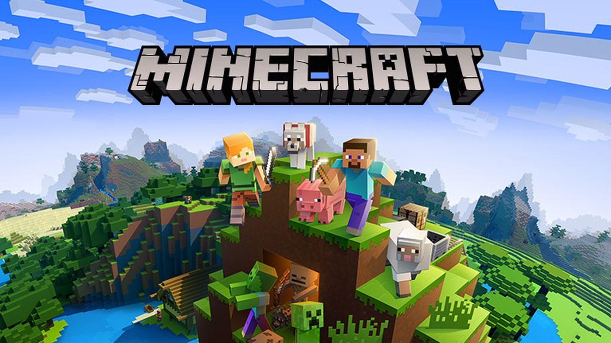

Top 3° Dark Souls 3

Dark Souls III é um jogo do género RPG de ação, o quarto da série Souls, desenvolvido pela FromSoftware e co-realizado por Hidetaka Miyazaki, o criador da série. Dark Souls III foi lançado para Microsoft Windows, PlayStation 4 e Xbox One no dia 24 de março de 2016 no Japão, e a 12 de abril de 2016 no resto do mundo
Top 2° Minecraft
Minecraft é um jogo eletrônico sandbox de sobrevivência criado pelo desenvolvedor sueco Markus "Notch" Persson e posteriormente desenvolvido e publicado pela Mojang Studios, cuja propriedade intelectual foi obtida pela Microsoft em 2014. Lançado inicialmente em maio de 2009 como um projeto em desenvolvimento, seu lançamento completo ocorreu em novembro de 2011 para Microsoft Windows, macOS, Linux e alguns dispositivos móveis, sendo posteriormente relançado para uma ampla variedade de plataformas. É o jogo eletrônico mais vendido de todos os tempos, vendendo mais de 238 milhões de cópias em todas as plataformas até abril de 2021, com mais de 140 milhões de jogadores ativos mensalmente.
Top 1° Undertale

Undertale é um RPG eletrônico criado pelo desenvolvedor independente norte-americano Toby Fox. Nele, o jogador pode controlar uma criança humana que caiu em uma caverna, uma região grande e isolada sob a superfície da Terra, separada por uma barreira mágica.